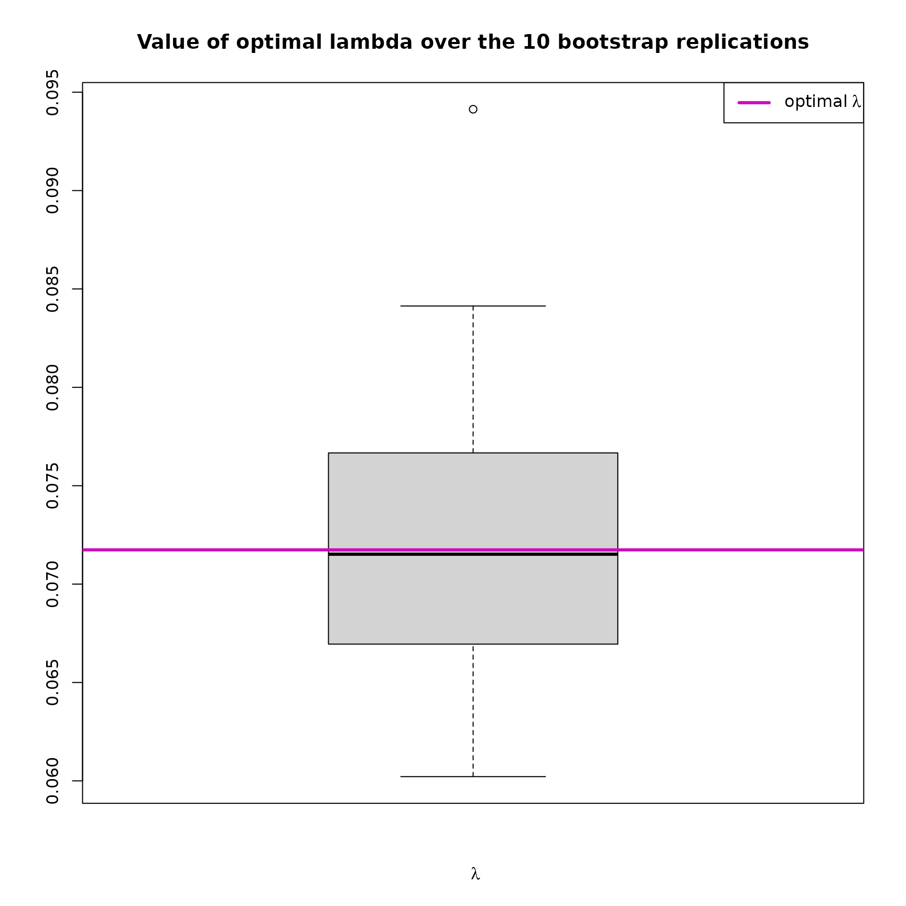

How to use the SIRthresholded package
Clément Weinreich
2023-06-09
SIRthresholded.RmdTable of content
- How SIR and SIR thresholded works
- Overview of the package
- Example with simulated data
- Example with wine dataset
This package offers an implementation of the \(SIR\) (Sliced Inverse Regression) method, along with a thresholded version of \(SIR\) that allows variable selection. The purpose of this vignettes is to explain the function implemented in the package, and how they are used. The first section is dedicated to the theoretical explaination of \(SIR\), and its thresholded version. Reading this section is therefore optional, but can be useful to better understand how the package functions work.
How SIR and SIR thresholded works
The semi-parametric model
Consider the following semi-parametric model: \[Y = g(\beta'X,\epsilon)\] where:
- \(Y \in \mathbb{R}\) is a univariate response variable
- \(X \in \mathbb{R}^p\) is a \(p\)-dimensional covariates such as \(\mathbb{E}(X)=\mu\) and \(\mathbb{V}(X)=\Sigma\)
- \(\beta\) is a vector generating a direction of \(\mathbb{R}^p\)
- \(\epsilon\) is the random error term, assumed independant of \(X\)
- \(g\) is an arbitrary link function (unknown)
It is common to present the model as \(Y\perp X\mid \beta'X\) which means that \(Y\) is independent of \(X\) conditional on \(\beta'X\). Thus, it is possible to replace \(X\in\mathbb{R}^p\) with the index \(\beta'X\in\mathbb{R}\) without loss of information in the regression of \(Y\) on \(X\). Thus, we do dimension reduction of the explanatory part \(X\) from \(p\)-dimension to \(1\)-dimension, without specifying either the relationship between the index \(\beta'X\) and \(Y\) or the distribution of the error term \(\epsilon\).
In the framework of this model, \(g\) being unknown, we cannot identify \(\beta\), but we can identify its direction. We then define the \(EDR\) (Effective Dimension Reduction) space \(E\) as the linear subspace of \(\mathbb{R}^p\) generated by \(\beta\). Any vector belonging to \(E\) is then an \(EDR\) direction.
The SIR method
The \(SIR\) method is used to obtain the estimate of an \(EDR\) direction. In theory, the \(SIR\) method requires a condition on the distribution of the explanatory variable \(X\) called the linearity condition: \(\forall b \in\mathbb{R}^p, \mathbb{E}[b'X\mid\beta'X]\) is linear in \(X'\beta\). In practice, it is impossible to verify this assumption because \(\beta\) is unknown and unidentifiable. However, this assumption is valid when the distribution of \(X\) is elliptical, which is the case for the multidimensional normal distribution.
Let’s now consider a monotonic transformation \(T\) (which in the case of the SIR method will correspond to a slicing function). Under the previous model and the linearity condition, (Duan & Li, 1991) showed that the centered inverse regression curve verifies : \[\mathbb{E}[X\mid T(Y)] - \mu \in \mbox{Span}(\Sigma\beta)\] Thus, the subspace generated by this curve, \({\mathbb{E}[X \mid T(Y)] - \mathbb{E}[X] : Y \in \mathcal{Y}}\) (where \(\mathcal{Y}\) is the support for the response variable \(Y\)), belongs to the \(EDR\) space. Therefore, the centered inverse regression curve can clearly be used to find the \(EDR\) space.
A direct consequence of this result, is that the variance covariance matrix of this curve, \(\Gamma = \mathbb{V}(\mathbb{E}[X \mid T(Y)])\), is degenerate in any direction \(\Sigma\)-orthogonal to \(\beta\). Therefore, the eigenvector associated with the largest nonzero eigenvalue of the matrix of interest \(\Sigma^{-1}\Gamma\) is an \(EDR\) direction, so it generates the \(EDR\) space \(E\).
In the slicing step of the \(SIR\) method, the support of \(Y\) is sliced into \(H\) slices \(\{s_1,\dots,s_H\}\). With a function \(T\) corresponding to this slicing, the matrix \(\Gamma\) can then be written as \[\Gamma=\sum_{h=1}^Hp_h(m_h-\mu)(m_h-\mu)'\] where \(p_h=P(Y\in s_h)\) is the theoretical proportion of \(Y_i\) falling in the \(s_h\) slice and \(m_h=\mathbb{E}[X\mid Y\in s_h]\) is the theoretical mean of \(X_i\) associated with \(Y_i\) falling in the \(s_h\) slice. This matrix \(\Gamma\) is therefore easy to estimate.
Let us consider a sample \(\{(X_i,Y_i), i=1,\dots,n\}\) generated from the previous model. In practice, it is necessary to replace the theoretical moments \(\mu, \Sigma, p_h\) and \(m_h\) by the empirical moments. Then, an estimator of a basis of the \(EDR\) space \(E\) is obtained via the eigenvector \(\hat{b}\) associated to the largest eigenvalue of the estimator \(\widehat{\Sigma}_n^{-1}\widehat{\Gamma}_n\) of \(\Sigma^{-1}\Gamma\) where :
\(\widehat{\Sigma}_n= \frac{1}{n} \sum_{i=1}^n (X_i - \bar{X}_n)(X_i -\bar{X}_n)'\) is the empirical variance covariance matrix of \(X\)
\(\widehat{\Gamma}_n= \sum_{h=1}^H\hat p_{h,n} (\hat m_{h,n} - \bar{X}_n)(\hat m_{h,n} -\bar{X}_n)'\) is the empirical variance covariance matrix of the empirical means of \(X\) per slices \(s_h\)
with :
\(\bar{X}_n= \frac{1}{n}\sum_{i=1}^nX_i,\) the empirical mean of the sample
\(\hat p_{h,n} = \frac{1}{n}\sum_{i=1}^{n} \mathbb{I} {[Y_i\in {s_h} ]} = \frac{\hat{n}_{h,n}}{n}\) the empirical proportion of \(Y_i\) falling in the slice \(s_h\) (where \(n_{h,n}\) is the number of \(Y\) falling in the slice \(s_h\))
\(\hat m_{h,n}=\frac{1}{\hat{n}_{h,n} }\sum_{i\in {s_h}}X_i\) the empirical mean of \(X_i\) such that \(Y_i\) falls into the slice \(h\)
Variable selection by soft or hard thresholding
It is possible to perform variable selection in SIR regression. The method presented here is a computational method using soft or hard thresholding of the matrix of interest. Let us define the soft thresholding (\(S\) as in soft) and hard thresholding (\(H\) as in hard) operators that apply to any matrix \(M\) of dimension \(p\times p\). For any real \(\lambda\geq 0\) and \((i,j)\in \{1,\dots,p\}\times \{1,\dots,p\}\) :
\[ S_\lambda(M)_{i,j}= sign(M_{i,j}) \times \begin{cases} \lvert M_{i,j} \rvert -\lambda & \mbox{if } \lvert M_{i,j} \rvert -\lambda >0, \\ 0 & \text{otherwise.} \end{cases} \]
\[ H_\lambda(M)_{i,j}= \begin{cases} M_{i,j} & \mbox{if } \lvert M_{i,j} \rvert -\lambda >0, \\ 0 & \text{otherwise.} \end{cases} \]
with \(sign\) the function that returns the sign of the considered element (\(1\) if positive, \(0\) if null and \(-1\) if negative).
We then introduce two new methods:
- \(ST-SIR\) for soft thresholding of the matrix of interest of the SIR approach, which considers the matrix \(S_\lambda(\widehat{\Sigma}_n^{-1}\widehat{\Gamma}_n)\),
- \(HT-SIR\) for hard thresholding of the matrix of interest of the SIR approach, which considers the matrix \(H_\lambda(\widehat{\Sigma}_n^{-1}\widehat{\Gamma}_n)\).
For each approach, an eigenvector associated to the largest eigenvalue of \(S_\lambda(\widehat{\Sigma}_n^{-1}\widehat{\Gamma}_n)\) or \(H_\lambda(\widehat{\Sigma}_n^{-1}\widehat{\Gamma}_n)\) is computed, for a given value of \(\lambda\).
The choice of the thresholding hyper-parameter \(\lambda\) must provide a balance between
- correct variable selection (by tilting some of the components of the considered eigenvector to \(0\))
- low distortion of the estimated direction \(\hat{b}\)
Then, once the \(p^{\star}\) useful variables have been identified, a new \(SIR\) model can be estimated on the basis of these \(p^{\star}\) selected variables. Thus, the estimation of \(\beta\) will be easier because the estimation is done in a space of reduced dimension.
Overview of the package
SIR function
Apply a single-index \(SIR\) on \((X,Y)\) with \(H\) slices. This function allows to obtain an estimate of a basis of the \(EDR\) (Effective Dimension Reduction) space via the eigenvector \(\hat{b}\) associated with the largest nonzero eigenvalue of the matrix of interest \(\widehat{\Sigma}_n^{-1}\widehat{\Gamma}_n\). Thus, \(\hat{b}\) is an \(EDR\) direction.
SIR_bootstrap function
Apply a single-index \(SIR\) on \(B\) bootstraped samples of \((X,Y)\) with \(H\) slices.
SIR_threshold function
Apply a single-index \(SIR\) on \((X,Y)\) with \(H\) slices, with a parameter \(\lambda\) which apply a soft/hard thresholding to the interest matrix \(\widehat{\Sigma}_n^{-1}\widehat{\Gamma}_n\).
SIR_threshold_opt function
Apply a single-index SIR on \((X,Y)\) with \(H\) slices, with a soft/hard thresholding
of the interest matrix \(\widehat{\Sigma}_n^{-1}\widehat{\Gamma}_n\)
by an optimal parameter \(\lambda_{opt}\). The \(\lambda_{opt}\) is found automatically
among a vector of n_lambda \(\lambda\), starting from 0 to the maximum
value of \(\widehat{\Sigma}_n^{-1}\widehat{\Gamma}_n\).
For each feature of \(X\), the number
of \(\lambda\) associated with a
selection of this feature is stored (in a vector of size \(p\)). This vector is sorted in a decreasing
way. Then, thanks to strucchange::breakpoints, a breakpoint
is found in this sorted vector. The coefficients of the variables at the
left of the breakpoint, tend to be automatically toggled to 0 due to the
thresholding operation based on \(\lambda_{opt}\), and so should be removed
(useless variables). Finally, \(\lambda_{opt}\) corresponds to the first
\(\lambda\) such that the associated
\(\hat{b}\) provides the same number of
zeros as the breakpoint’s value.
For example, for \(X \in
\mathbb{R}^{10}\) and n_lambda=100, this sorted
vector can look like this :
| X10 | X3 | X8 | X5 | X7 | X9 | X4 | X6 | X2 | X1 |
|---|---|---|---|---|---|---|---|---|---|
| 2 | 3 | 3 | 4 | 4 | 4 | 6 | 10 | 95 | 100 |
Here, the breakpoint would be 8.
SIR_threshold_bootstrap function
Apply a single-index optimally soft/hard thresholded \(SIR\) with \(H\) slices on n_replications
bootstraped replications of \((X,Y)\).
The optimal number of selected variables is the number of selected
variables that came back most often among the replications performed.
From this, we can get the corresponding \(\hat{b}\) and \(\lambda_{opt}\) that produce the same
number of selected variables in the result of
SIR_threshold_opt.
This method allow to validate the robustness of the model.
Example with simulated data
In this section :
- (1) A dataset is created.
- (2) Classic SIR is applied to this dataset. The outputs from the S3 summary and plot methods are described.
- (3) SIR optimally thresholded is applied to this dataset in order to do variable selection. The outputs from the S3 summary and plot methods are described.
- (4) A new SIR model is estimated on the relevant variables, selected by SIR thresholded. We notice that the estimation of the EDR direction is better than with the classic SIR method.
- (5) SIR thresholded is applied on the dataset with a custom \(\lambda\) parameter.
- (6) A bootstrapped version of SIR optimally thresholded is applied to the data, in order to ensure the robustness of the model. The outputs from the S3 summary and plot methods are described.
Generate the data
Let’s create \(Y = (X\beta)^3 + \epsilon\) with:
- \(n=200\) (Sample size)
- \(X\in \mathbb{R}^p\) and \(X\sim\mathcal{N}(0,\mathbb{I}_p)\)
- \(p=30\) and \(p^\star=10\) (\(10\) relevant variables in \(X\))
- \(\epsilon\sim\mathcal{N}(0,20)\) and \(\epsilon \perp \!\!\! \perp X\).
set.seed(4)
n <- 200 # Sample size
p <- 30 # Number of variables in X
p_star <- 10 # Number of relevant variables in X
X <- mvtnorm::rmvnorm(n,sigma=diag(p)) # X ~ N(0,I_p)
dimnames(X) <- list(1:n, paste("X", 1:p, sep = "")) # Rename columns of X
eps <- rnorm(n, sd = 20) # Error
beta <- matrix(c(rep(1,p_star),rep(0,p-p_star)),ncol=1) # Beta = Heaviside function
rownames(beta) <- colnames(X) # Rename rows of X
Y <- (X %*% beta)**3 + eps # The modelWe can now plot Y versus the reconstructed index \(X\beta\)
Create a SIR model
The SIR function is applied to these data.
res_SIR = SIR(Y = Y, X = X, H = 10,graph = FALSE)The object res_SIR is an object of class
SIR and contains many numerical results (see ?SIR for more
details), summarized in the S3 methods print and
summary.
summary(res_SIR)#>
#> Call:
#> SIR(Y = Y, X = X, H = 10, graph = FALSE)
#>
#> ===== Sliced Inverse Regression =====
#>
#> Number of observations: 200
#> Number of variables in X: 30
#> Number of slices: 10
#>
#> Results of EDR directions estimation:
#>
#> Estimated direction
#> X1 0.34400
#> X2 0.36600
#> X3 0.33200
#> X4 0.32000
#> X5 0.26300
#> X6 0.30500
#> X7 0.27400
#> X8 0.23600
#> X9 0.31200
#> X10 0.30600
#> X11 0.12200
#> X12 0.03120
#> X13 0.01070
#> X14 0.01600
#> X15 0.03300
#> X16 0.00340
#> X17 0.04530
#> X18 0.07400
#> X19 0.04980
#> X20 -0.00491
#> X21 0.07130
#> X22 0.02870
#> X23 -0.08520
#> X24 0.08890
#> X25 -0.01830
#> X26 -0.00849
#> X27 0.00212
#> X28 -0.00874
#> X29 -0.05090
#> X30 -0.00886You can now access the estimation of the EDR direction with
res_SIR$b. Thus, it is possible to compute the correlation
between \(\beta\) and \(\hat{b}\) :
#> [1] 0.9509708Here are the two graphical outputs obtained with the method
plot of the objects of class SIR.
The first plot shows the reconstructed index by plotting \(Y\) versus \(X\hat{b}\) with \(\hat{b}\) the estimated \(EDR\) direction.
The second one shows the ten largest eigenvalues of the interest
matrix. The \(EDR\) direction is the
eigenvector \(\hat{b}\) associated with
the largest eigenvalue. This plot can be useful to check if the largest
eigenvalues are very close or not. In the case where they are close, it
could be interesting to try to choose the second or third largest
eigenvector to reconstruct the index. You can access the interest matrix
with res_SIR$M1, and then compute the eigenvectors and
eigenvalues with the function eigen().
By looking at \(\hat{b}\), we notice that the coefficient associated to some variables are close to \(0\). We assume that some variables are useless and that it would be interesting to do variable selection.
Use optimally thresholded SIR
An other approach is to directly use the optimally thresholded version of \(SIR\) which will provide an estimate of the \(EDR\) direction, and select the relevant variables. Let’s start with \(ST-SIR\) (soft thresholded SIR) with 100 \(\lambda\) values to test :
res_STSIR = SIR_threshold_opt(Y=Y, X=X, H=10, n_lambda=100, thresholding="soft", graph=FALSE)The object res_STSIR is an object of class
SIR_threshold_opt and contains many numerical results (see
?SIR_threshold_opt for more details), summarized in the S3 methods
print and summary.
summary(res_STSIR)#>
#> Call:
#> SIR_threshold_opt(Y = Y, X = X, H = 10, n_lambda = 100, thresholding = "soft", graph = FALSE)
#>
#> ===== Optimally Thresholded Sliced Inverse Regression =====
#>
#> Number of observations: 200
#> Number of variables in X: 30
#> Number of slices: 10
#> Testing: 100 lambda between 0 and 0.112
#> Optimal thresholding parameter lambda : 0.0717
#> Thresholding method: soft
#>
#> Number of selected variables = 10 over the 30 available variables
#> List of relevant variables: X1,X2,X3,X4,X5,X6,X7,X8,X9,X10
#>
#> Results of EDR directions estimation:
#>
#> Estimated direction
#> X1 -0.374
#> X2 -0.625
#> X3 -0.369
#> X4 -0.200
#> X5 -0.216
#> X6 -0.163
#> X7 -0.193
#> X8 -0.101
#> X9 -0.319
#> X10 -0.267
#> X11 0.000
#> X12 0.000
#> X13 0.000
#> X14 0.000
#> X15 0.000
#> X16 0.000
#> X17 0.000
#> X18 0.000
#> X19 0.000
#> X20 0.000
#> X21 0.000
#> X22 0.000
#> X23 0.000
#> X24 0.000
#> X25 0.000
#> X26 0.000
#> X27 0.000
#> X28 0.000
#> X29 0.000
#> X30 0.000
#>
#> Estimate a new SIR model on the relevant variables with :
#> SIR(Y=res_STSIR$Y, X=res_STSIR$X_reduced, H=res_STSIR$H)Here are some graphical outputs obtained with the method
plot of the objects of class
SIR_threshold_opt.
plot(res_STSIR,choice="cos2_selec")This plot shows the evolution of \(cos^2(\hat{b}_{ST-SIR},\hat{b}_{SIR})\) and the percentage of variables selected by the model, according to the value of \(\lambda\). This graph is very informative as it shows the compromise between variable selection and distortion of the estimated direction. The \(\hat{\lambda}_{opt}\) must provide a balance between these two.
plot(res_STSIR,choice="opt_lambda")This plot shows how the optimal lambda has been chosen. For each
feature of \(X\), the percentage of
\(\lambda\) associated with a selection
of this feature is stored in a vector, which is sorted and plotted here.
Thanks to strucchange::breakpoints, a breakpoint is found
in this sorted vector, which allows to deduce the \(\lambda_{opt}\) as explained in the Overview.
plot(res_STSIR,choice="regul_path")This plot shows the regularization path of \(\hat{b}\) according to the value of \(\lambda\). Here, we can see that according to \(\lambda\), some variables rapidly converge to 0, whereas the 10 relevant variables are more difficult to toggle to 0.
Then, let’s plot plot Y versus the estimated first index \(X\hat{b}\).
plot(res_STSIR,choice="estim_ind")We can also see some graphical outputs of
SIR_threshold_opt with hard thresholding :
res_HTSIR = SIR_threshold_opt(Y=Y, X=X, H=10, n_lambda=100, thresholding="hard", graph=FALSE)
plot(res_HTSIR,choice="cos2_selec")
plot(res_HTSIR,choice="regul_path")
The hard thresholding method results in a more abrupt variable selection according to the \(\lambda\)s, wich explains that the curves are straighter with bigger jumps between values.
Estimate a new SIR model on the relevant variables
As the soft thresholding deforms the matrix of interest with the
\(\lambda\) parameter, the estimation
of \(\hat{b}\) is biased. That is why,
at the end of the S3 summary method, it is proposed to create a new SIR
model based only on the relevant variables, selected by the method.
Let’s copy paste the command line from the result of
SIR_threshold_opt and see the results:
#>
#> Call:
#> SIR(Y = res_STSIR$Y, X = res_STSIR$X_reduced, H = res_STSIR$H)
#>
#> ===== Sliced Inverse Regression =====
#>
#> Number of observations: 200
#> Number of variables in X: 10
#> Number of slices: 10
#>
#> Results of EDR directions estimation:
#>
#> Estimated direction
#> X1 -0.370
#> X2 -0.359
#> X3 -0.348
#> X4 -0.315
#> X5 -0.291
#> X6 -0.282
#> X7 -0.288
#> X8 -0.255
#> X9 -0.324
#> X10 -0.313Let’s plot Y versus the estimated first index \(X\hat{b}\)
plot(res_SIR_pstar,choice="estim_ind")We directly notice that this estimated index is very close to the theoretical index plotted earlier.
As done previously, let’s compute the correlation between \(\beta\) and \(\hat{b}_{ST-SIR-p^\star}\) and compare it with the results of classic SIR. As the real \(\beta\) vector has a length of 30 and \(\hat{b}_{ST-SIR-p^\star}\) has a length of 10, we need to create a new vector of size 30 to be able to compare them.
b_extended <- matrix(rep(0,p),nrow=1) # Create the empty vector
colnames(b_extended) <- colnames(X) # Assign the colnames of X
# Assign the values of b_extended according to the colnames
b_extended[which(colnames(b_extended) %in% colnames(res_SIR_pstar$b))] = res_SIR_pstar$bLet’s compute the correlation :
#> [1] -0.9908271We notice that the estimation of \(\beta\) is better than the classic \(SIR\) method (95% for \(SIR\) and 99% for \(ST-SIR-p^\star\)). The 20 useless variables have been eliminated, and the estimation of the \(EDR\) direction is very good.
Wether using hard or soft thresholding, it is always relevent to create a new \(SIR\) model considering only the relevant variables. It allows to improve the estimation of the \(EDR\) direction.
SIR thresholded with a given \(\lambda\) parameter
If you want to experiment the thresholding operation by yourself, you
can call SIR_threshold and give your own \(\lambda\) to threshold the interest matrix
:
res_SIR_thresh = SIR_threshold(Y, X, H = 10, lambda = 0.04, thresholding = "hard")
summary(res_SIR_thresh)#>
#> Call:
#> SIR_threshold(Y = Y, X = X, H = 10, lambda = 0.04, thresholding = "hard")
#>
#> ===== Thresholded Sliced Inverse Regression =====
#>
#> Number of observations: 200
#> Number of variables in X: 30
#> Number of slices: 10
#> Thresholding parameter lambda: 0.04
#> Thresholding method: hard
#>
#> Number of selected variables = 15 over the 30 available variables
#> List of relevant variables: X1,X2,X3,X4,X5,X6,X7,X8,X9,X10,X11,X14,X15,X18,X23
#>
#> Results of EDR directions estimation:
#>
#> Estimated direction
#> X1 -0.36200
#> X2 -0.37300
#> X3 -0.33400
#> X4 -0.33400
#> X5 -0.26900
#> X6 -0.32100
#> X7 -0.27500
#> X8 -0.22600
#> X9 -0.31100
#> X10 -0.31700
#> X11 -0.07260
#> X12 0.00000
#> X13 0.00000
#> X14 0.00387
#> X15 -0.01610
#> X16 0.00000
#> X17 0.00000
#> X18 -0.01850
#> X19 0.00000
#> X20 0.00000
#> X21 0.00000
#> X22 0.00000
#> X23 0.03170
#> X24 0.00000
#> X25 0.00000
#> X26 0.00000
#> X27 0.00000
#> X28 0.00000
#> X29 0.00000
#> X30 0.00000
#>
#> Estimate a new SIR model on the relevant variables with :
#> SIR(Y=res_SIR_thresh$Y, X=res_SIR_thresh$X_reduced, H=res_SIR_thresh$H)Test the robustness of the model with bootstrapping
To test the robustness of the model, it is relevant to perform
bootstrapping. This method is even more relevant when the sample size is
small. Lets call SIR_threshold_bootstrap on the data, with
10 replications (only 10 to simplify vignettes building), a bootstrapped
sample size multiplied by 2 (k=2) and the hard thresholding method :
res_SIR_boot = SIR_threshold_bootstrap(Y,X,H=10,n_lambda=100,thresholding="hard", n_replications=10,k=2,graph = FALSE)#> [1] "Replication 5 / 10"
#> [1] "Replication 10 / 10"The object res_SIR_boot is an object of class
SIR_threshold_bootstrap and contains many numerical results
(see ?SIR_threshold_bootstrap for more details), summarized in the S3
methods print and summary.
summary(res_SIR_boot)#>
#> Call:
#> SIR_threshold_bootstrap(Y = Y, X = X, H = 10, thresholding = "hard", n_replications = 10, graph = FALSE, n_lambda = 100, k = 2)
#>
#> ===== Optimally Thresholded Sliced Inverse Regression on bootstrapped replications =====
#>
#> Number of observations: 200
#> Number of variables in X: 30
#> Number of slices: 10
#> Number of bootstraped replications: 10
#> Optimal thresholding parameter lambda : 0.0717
#> Thresholding method: hard
#>
#> Number of selected variables = 10 over the 30 available variables
#> List of relevant variables: X1,X2,X3,X4,X5,X6,X7,X8,X9,X10
#>
#> Results of EDR directions estimation:
#>
#> Estimated direction
#> X1 0.399
#> X2 0.363
#> X3 0.395
#> X4 0.390
#> X5 0.196
#> X6 0.284
#> X7 0.197
#> X8 0.135
#> X9 0.355
#> X10 0.315
#> X11 0.000
#> X12 0.000
#> X13 0.000
#> X14 0.000
#> X15 0.000
#> X16 0.000
#> X17 0.000
#> X18 0.000
#> X19 0.000
#> X20 0.000
#> X21 0.000
#> X22 0.000
#> X23 0.000
#> X24 0.000
#> X25 0.000
#> X26 0.000
#> X27 0.000
#> X28 0.000
#> X29 0.000
#> X30 0.000
#>
#> Estimate a new SIR model on the relevant variables with :
#> SIR(Y=res_SIR_boot$Y, X=res_SIR_boot$X_reduced, H=res_SIR_boot$H)Here are some graphical outputs obtained with the method
plot of the objects of class
SIR_threshold_bootstrap.
plot(res_SIR_boot,choice="size")This barplot shows the distribution of the number of variables keeped by the model.
plot(res_SIR_boot,choice="selec_var")This barplot shows the percentage of selection by the model for every variables.
plot(res_SIR_boot,choice="lambdas_replic")
This boxplot shows the distribution of the \(\lambda_{opt}\) choosen over the replications. Moreover, the \(\lambda_{opt}\) that has been selected (see how in the overview) is indicated with a purple horizontal line.
plot(res_SIR_boot,choice="coefs_b")This plot shows the distribution of every coefficients of the \(\hat{b}\) computed over the replications. The final coefficients of \(\hat{b}\) that have been computed (see how in the overview) are indicated with a purple dot.
As done with SIR_threshold_opt, we can also create a new
SIR model considering only the relevant variables.
Example with Wine dataset
In this section :
- (1) Load the wine dataset.
- (2) A first SIR model optimally thresholded is applied to the data.
- (3) A bootstrapped version of SIR optimally thresholded is applied to the data.
- (4) A SIR model thresholded with a custom \(\lambda\) is applied to the data.
- (5) A SIR model is applied on the relevant variables
- (6) Additional study of the quality of the model with multiple linear regression
- (7) Concluding remarks
The data
For this example, we chose the wine dataset from the UCI machine learning repository (the official link is not working anymore, please find another version of the dataset on that link https://gist.githubusercontent.com/tijptjik/9408623/raw/b237fa5848349a14a14e5d4107dc7897c21951f5/wine.csv). As explained on the page description of the dataset, these data are the results of a chemical analysis of wines grown in the same region in Italy. The analysis determined the quantities of 12 constituents found in the 178 samples of wine. Here, we’ll try to find the relevant variables in order to perform regression on the response variable Nonflavanoids according to the 12 other constituents. First, let’s load the dataset.
wine <- read.csv("https://gist.githubusercontent.com/Clement-W/26d99a28ab89929b6321f70a04535451/raw/169a36568d1fc7c5a7c508e8d3e720d5040744cd/wine.csv", header = FALSE)
colnames(wine) <- c('Type', 'Alcohol', 'Malic', 'Ash', 'Alcalinity', 'Magnesium',
'Phenols', 'Flavanoids', 'Nonflavanoids', 'Proanthocyanins',
'Color', 'Hue', 'Dilution', 'Proline')
# Extract the response variable
Y <- wine$Nonflavanoids
# Remove the response variable (Nonflavanoids) and the class information (type of cultivars)
X <- wine[, -which(names(wine) %in% c("Type","Nonflavanoids"))]
head(cbind(Y,X),3)#> Y Alcohol Malic Ash Alcalinity Magnesium Phenols Flavanoids
#> 1 0.28 14.23 1.71 2.43 15.6 127 2.80 3.06
#> 2 0.26 13.20 1.78 2.14 11.2 100 2.65 2.76
#> 3 0.30 13.16 2.36 2.67 18.6 101 2.80 3.24
#> Proanthocyanins Color Hue Dilution Proline
#> 1 2.29 5.64 1.04 3.92 1065
#> 2 1.28 4.38 1.05 3.40 1050
#> 3 2.81 5.68 1.03 3.17 1185#> [1] 178 12The X data contains 178 samples of 12 variables. As suggested in the
description page of this dataset, we’ll standardise the variables with
the scale() method. Here, scaling the data is mandatory to
ensure that the SIR method works properly.
A first SIR model
Now, we can use SIR_threshold_opt to do variable
selection with an optimal thresholding parameter. The sample size is
relatively small. To improve the estimations of \(p_h\) and \(m_h\) in the SIR method (more details in the first part of this
vignette), we reduce the number of slices to 5, so there is more
sample in each slices.
res1 = SIR_threshold_opt(Y=Y, X=X, H=5, n_lambda=300, thresholding="soft", graph=FALSE)
summary(res1)#>
#> Call:
#> SIR_threshold_opt(Y = Y, X = X, H = 5, n_lambda = 300, thresholding = "soft", graph = FALSE)
#>
#> ===== Optimally Thresholded Sliced Inverse Regression =====
#>
#> Number of observations: 178
#> Number of variables in X: 12
#> Number of slices: 5
#> Testing: 300 lambda between 0 and 0.241
#> Optimal thresholding parameter lambda : 0.154
#> Thresholding method: soft
#>
#> Number of selected variables = 2 over the 12 available variables
#> List of relevant variables: Ash,Flavanoids
#>
#> Results of EDR directions estimation:
#>
#> Estimated direction
#> Alcohol 0.000
#> Malic 0.000
#> Ash -0.127
#> Alcalinity 0.000
#> Magnesium 0.000
#> Phenols 0.000
#> Flavanoids 0.992
#> Proanthocyanins 0.000
#> Color 0.000
#> Hue 0.000
#> Dilution 0.000
#> Proline 0.000
#>
#> Estimate a new SIR model on the relevant variables with :
#> SIR(Y=res1$Y, X=res1$X_reduced, H=res1$H)In this first model, 2 variables are selected : Ash and Flavanoids. Let’s explore the graphs to better understand what is going on.
plot(res1,choice="estim_ind")We first note that the model is very noisy. However, we still notice a linear tendency between the estimated index and Y.
Let’s now focus on variable selection.
These two graphs helps us to understand the link between variable selection (the coefficients of \(\hat{b}\)) and \(\lambda\). Here, the \(\lambda_{opt}\) allows to select 2 variables. In the first plot, we notice that if \(\lambda\) were a bit less than \(\lambda_{opt}\), we could have selected 2 or 3 more variables, while improving the estimation of \(\hat{b}\). In fact, in the second plot, we notice that the coefficients of \(\hat{b}\) associated to the variables Dillution, Magnesium and Hue are set to 0 by \(\lambda_{opt}\).
Perform Bootstrap
As the data is noisy, the sample size is small, and the \(\lambda_{opt}\) obtained with
SIR_threshold_opt is questionable, it is relevant to
perform SIR_threshold_opt on bootstrapped replications of the dataset.
Let’s perform 500 replications, with a bootstrapped sample size
multiplied by 2 :
# To lighten the build of the vignette, the result of this command was saved into a RData file.
#res2 = SIR_threshold_bootstrap(Y=Y, X=X, H=5, n_lambda=200, thresholding="hard", n_replications = 500 , graph=FALSE)
load("../R/sysdata.rda") # load res2
summary(res2)#>
#> Call:
#> SIR_threshold_bootstrap(Y = scale(Y), X = scale(X), H = 5, n_replications = 500, n_lambda = 200)
#>
#> ===== Optimally Thresholded Sliced Inverse Regression on bootstrapped replications =====
#>
#> Number of observations: 178
#> Number of variables in X: 12
#> Number of slices: 5
#> Number of bootstraped replications: 500
#> Optimal thresholding parameter lambda : 0.146
#> Thresholding method: hard
#>
#> Number of selected variables = 2 over the 12 available variables
#> List of relevant variables: Ash,Flavanoids
#>
#> Results of EDR directions estimation:
#>
#> Estimated direction
#> Alcohol 0.000
#> Malic 0.000
#> Ash -0.436
#> Alcalinity 0.000
#> Magnesium 0.000
#> Phenols 0.000
#> Flavanoids 0.900
#> Proanthocyanins 0.000
#> Color 0.000
#> Hue 0.000
#> Dilution 0.000
#> Proline 0.000
#>
#> Estimate a new SIR model on the relevant variables with :
#> SIR(Y=res2$Y, X=res2$X_reduced, H=res2$H)Let’s explore some of the graphical outputs :
plot(res2,choice="size")Over the 500 replications, 50% of the models selected 2 variables. Then, approximately 45% of the models selected 3,4,5 or 6 variables. Let’s take a look at the percentage of variable selection.
plot(res2,choice="selec_var")As expected, a large majority of the models have selected the
variables Ash and Flavanoids. But it is interesting to see that 4 other
variables were regularly selected (between 30 and 40% of the
replications) : Magnesium, Phenols, Hue and Dilution. We notice that
these variables were closed to be selected in
SIR_threshold_opt.
plot(res2,choice="coefs_b")Looking at the boxplot of the value of \(\hat{b}\) over the 500 replications, we also find the same results. The coefficients of \(\hat{b}\) associated to Magnesium, Phenols, Hue and Dilution are greater than 0 in median. It would then be interesting to create a SIR model, that contains these variable.
Thresholding with a custom \(\lambda\)
Let’s look at the regularization path plotted earlier, and find the \(\lambda\) which select the 4 potentially relevant variables. By looking at the top axis of the regularization path, we find the first lambda which select 6 variables, which is approximately 0.07 :
res3 = SIR_threshold(Y=Y, X=X, H=5, lambda = 0.071, thresholding="hard", graph=FALSE)
summary(res3)#>
#> Call:
#> SIR_threshold(Y = Y, X = X, H = 5, lambda = 0.071, thresholding = "hard", graph = FALSE)
#>
#> ===== Thresholded Sliced Inverse Regression =====
#>
#> Number of observations: 178
#> Number of variables in X: 12
#> Number of slices: 5
#> Thresholding parameter lambda: 0.071
#> Thresholding method: hard
#>
#> Number of selected variables = 6 over the 12 available variables
#> List of relevant variables: Ash,Magnesium,Phenols,Flavanoids,Hue,Dilution
#>
#> Results of EDR directions estimation:
#>
#> Estimated direction
#> Alcohol 0.000
#> Malic 0.000
#> Ash 0.321
#> Alcalinity 0.000
#> Magnesium -0.322
#> Phenols 0.229
#> Flavanoids -0.764
#> Proanthocyanins 0.000
#> Color 0.000
#> Hue 0.342
#> Dilution -0.202
#> Proline 0.000
#>
#> Estimate a new SIR model on the relevant variables with :
#> SIR(Y=res3$Y, X=res3$X_reduced, H=res3$H)Now, the 6 variables are selected with this estimation of \(\hat{b}.\). Let’s estimate a new SIR model only on these relevant variables.
Estimate a SIR model on the relevant variables
Let’s copy paste the command from the previous output of the S3 summary method, and plot the estimated index versus Y :
#>
#> Call:
#> SIR(Y = res3$Y, X = res3$X_reduced, H = res3$H, graph = FALSE)
#>
#> ===== Sliced Inverse Regression =====
#>
#> Number of observations: 178
#> Number of variables in X: 6
#> Number of slices: 5
#>
#> Results of EDR directions estimation:
#>
#> Estimated direction
#> Ash -0.388
#> Magnesium 0.297
#> Phenols -0.250
#> Flavanoids 0.745
#> Hue -0.194
#> Dilution 0.324
plot(res4,choice="estim_ind")We can note that the estimated index seems to be a bit less noisy, the linear tendency is easier to see.
Additional study
Visually, the link between Y and X seems to be linear. To estimate the quality of our model, and to evaluate the relevance of the selected variable, we can build a linear model on the data.
Let’s start with a model containing every variables :
#>
#> Call:
#> lm(formula = Y ~ X)
#>
#> Residuals:
#> Min 1Q Median 3Q Max
#> -2.11496 -0.41347 -0.00877 0.47458 2.62253
#>
#> Coefficients:
#> Estimate Std. Error t value Pr(>|t|)
#> (Intercept) -3.303e-16 5.792e-02 0.000 1.000000
#> XAlcohol -4.363e-02 9.105e-02 -0.479 0.632424
#> XMalic 7.486e-02 7.453e-02 1.004 0.316694
#> XAsh 3.109e-01 8.238e-02 3.774 0.000224 ***
#> XAlcalinity 2.629e-03 8.691e-02 0.030 0.975908
#> XMagnesium -2.540e-01 6.628e-02 -3.833 0.000180 ***
#> XPhenols 1.112e-01 1.206e-01 0.922 0.358116
#> XFlavanoids -4.876e-01 1.492e-01 -3.267 0.001321 **
#> XProanthocyanins 5.665e-02 8.152e-02 0.695 0.488121
#> XColor 4.774e-02 1.010e-01 0.473 0.636979
#> XHue 1.945e-01 9.154e-02 2.125 0.035066 *
#> XDilution -2.527e-01 1.113e-01 -2.271 0.024464 *
#> XProline -5.248e-02 9.752e-02 -0.538 0.591230
#> ---
#> Signif. codes: 0 '***' 0.001 '**' 0.01 '*' 0.05 '.' 0.1 ' ' 1
#>
#> Residual standard error: 0.7728 on 165 degrees of freedom
#> Multiple R-squared: 0.4433, Adjusted R-squared: 0.4028
#> F-statistic: 10.95 on 12 and 165 DF, p-value: 7.236e-16The R-squared is equal to 44.33%, so aproximately 44% of the variability is explained by this model. We also notice that the coefficients associated to the variables Ash, Magnesium, Flavanoids, Hue and Dilution are significants.
Let’s compare with the R-squared obtained with the variables selected by the previous SIR model :
-
The first model res1 which selected Flavanoids and Ash :
#> [1] 0.351731 -
The model with a custom thresholding parameter res3 which selected Flavanoids, Ash, Magnesium, Dilution, Phenols, Hue :
#> [1] 0.4339991
The best compromise seems to be the SIR model that keep 6 variables. The R-squared is almost identical (-1%) and half of the variables have been kept.
Concluding remarks
The package SIRthresholded helped us to find the relevant variables,
in order to create the best non-parametric regression on the response
variable Nonflavanoids. This example shown that only using
SIR_threshold_opt can be limiting on real data, especially
when the data is noisy with a small sample size. The method
SIR_threshold_bootstrap helped us to counter this issue,
and retrieve important information about the potential relevant
variables. Finally, the best model is res4 which is a SIR
model only based on the 6 relevant variables : Flavanoids, Ash,
Magnesium, Dilution, Phenols, Hue.